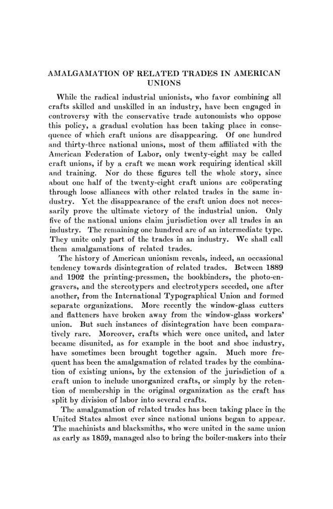

Glocker, 1915: quando os ofícios afins se unem no mesmo sindicato
Leitura: 9 min
Theodore W. Glocker mostra que, enquanto se discutia sindicato de ofício contra sindicato industrial, os sindicatos americanos vinham unindo ofícios afins, e examina por que, de que formas e com que limites.


No verão de 1904, os trabalhadores dos grandes frigoríficos de Chicago entraram em greve. Os maquinistas e foguistas das instalações, que pertenciam a sindicatos próprios, continuaram trabalhando. Se tivessem parado e desligado a usina de gelo das câmaras frigoríficas, dizem os dirigentes do sindicato dos açougueiros, os patrões teriam cedido em poucas horas. Eles pediram autorização a seus sindicatos para aderir, mas a resposta levou dias, e quando finalmente pararam os frigoríficos já tinham contratado substitutos.
O episódio é um dos argumentos de Theodore W. Glocker, da University of Tennessee, no artigo que fecha a parte principal do número de setembro de 1915 da American Economic Review. O debate da época opunha os sindicalistas industriais radicais, que queriam unir todos os ofícios de uma indústria, qualificados ou não, e os chamados autonomistas de ofício, que se opunham a isso. Glocker mostra que, enquanto os dois lados discutiam, ocorria uma evolução gradual que fazia desaparecer o sindicato de ofício.
O que restava do sindicato de ofício?
A contagem de Glocker define ofício como trabalho que exige habilidade e formação idênticas. Por esse critério, dos 133 sindicatos nacionais, a maioria filiada à American Federation of Labor, só 28 eram sindicatos de ofício, e cerca de metade destes cooperava com ofícios afins da mesma indústria por alianças frouxas. Mas o desaparecimento do sindicato de ofício não significava a vitória do sindicato industrial: só cinco reivindicavam todos os ofícios de uma indústria.
Houve casos de desintegração. Entre 1889 e 1902, impressores de prelo, encadernadores, fotogravadores e estereotipistas saíram, um após outro, da International Typographical Union. Mas foram raros. Muito mais comum foi a união: pela fusão de sindicatos existentes, pela extensão da jurisdição de um ofício a ofícios não organizados ou simplesmente pela permanência no mesmo sindicato quando a divisão do trabalho partia um ofício em vários. Os maquinistas e ferreiros já estavam unidos em 1859; os Sons of Vulcan, de forjadores e pudladores, juntaram-se em 1876 a outros sindicatos do ferro e do aço.
O movimento acelerou depois de 1894. Entre esse ano e 1904, fundiram-se os sindicatos de sapateiros, de chapeleiros e de têxteis, os moldadores absorveram os macheiros e surgiu o sindicato dos açougueiros, com grupos minuciosamente subdivididos. Depois de 1904, a ascensão dos Industrial Workers of the World estimulou a American Federation of Labor a adotar uma atitude mais liberal: desde 1903 ela criara departamentos para os ofícios metalúrgicos, a construção, a mineração e os ferroviários.
Por que unir ofícios afins?
A primeira razão é a greve. Greves de um só departamento falham quando o patrão manda fazer o trabalho em outro estabelecimento: se os compositores de uma tipografia param e os impressores continuam, a composição pode ser feita fora por não sindicalizados. Foi o que levou à fusão dos três sindicatos do ferro e do aço em 1876, depois que a grande greve de forjadores e pudladores de Pittsburgh fracassou em 1875, porque os laminadores trabalharam com ferro feito por não sindicalizados em outro lugar.
A segunda é o boicote e o selo sindical. Boicotes separados se contradizem: os impressores de prelo podem pedir ao público que não compre o jornal que os tipógrafos pedem que compre. Os sindicatos de sapateiros fundiram-se em 1895 sobretudo pela necessidade de manter um selo único. A terceira é a passagem de trabalhadores de um ofício a outro: foguistas viram maquinistas de locomotiva, ajudantes de impressor viram impressores, e quem muda de ofício resiste a deixar o sindicato antigo para não perder os benefícios.
A quarta são as disputas de jurisdição sobre quem deve fazer cada trabalho, multiplicadas por novos materiais e máquinas. O cimento criou os trabalhadores de cimento, em disputa com os pedreiros sobre a pedra artificial; pedreiros, assentadores de ladrilho e trabalhadores de cimento reivindicavam todos o direito de assentar ladrilho de cimento. Na Inglaterra, observa o autor, canteiros e cortadores de granito federados não brigavam como nos Estados Unidos, onde estavam separados.
Quais os custos da fusão?
Ofícios afins também têm interesses divergentes, e o problema se agrava quando um deles supera em número todos os outros juntos. No sindicato que unia encanadores, gasistas e montadores de vapor, os dois últimos queixavam-se de serem vencidos nas votações e de ver os fundos gastos em favor dos encanadores. Os impressores de prelo disseram ter saído da International Typographical Union porque os compositores, muito mais numerosos, davam pouca atenção aos outros ofícios.
A fraqueza, para Glocker, vem de não se ter adaptado a forma de governo. Na transição gradual, a constituição do velho sindicato de ofício costumava ser adotada sem emenda. Por isso ele descreve uma escala de formas: a cooperação temporária pela greve de solidariedade; o acordo permanente, como o dos impressores de papel de parede com os gravadores de moldes; o acordo com máquina de decisão comum, como o tripartite de 1896 entre tipógrafos, impressores e encadernadores; as federações locais e nacionais; e a amalgamação, a forma mais centralizada.
A greve de solidariedade sem órgão comum tem quatro defeitos, segundo o autor: atrasa, impede que um sindicato evite greves imprudentes de outro, multiplica os conflitos e faz os sindicatos romperem contratos. Na construção, em Chicago pouco antes de 1900 e em Nova York em 1902, greves sucessivas de cada ofício paravam todas as obras, e a data de conclusão de um prédio virava aposta.
Que ofícios devem se unir?
Glocker divide as combinações entre as de ofícios com os mesmos empregadores e as de ofícios com empregadores diferentes, como os que produzem materiais e os que os usam. Estas, conclui, têm poucos interesses em comum, e a greve de solidariedade entre elas é malvista. A Amalgamated Rubber Workers' Union, que reunia fabricantes de pneus e de galochas, produzidos em regiões diferentes por empresas diferentes, era uma combinação artificial e logo se desfez.
A primeira condição de sucesso, portanto, é ter os mesmos empregadores. Se um ofício supera muito os outros e as fronteiras são rígidas, como na tipografia, a federação pode ser preferível; se os ofícios se equilibram e os trabalhadores passam com facilidade de uma tarefa a outra, a amalgamação é fácil. Para os ofícios auxiliares presentes em muitas indústrias, como maquinistas de instalações e foguistas, o autor registra uma proposta de dirigentes sindicais: dupla filiação, com a negociação no sindicato industrial e o controle da oferta de trabalhadores no sindicato de ofício.
E os trabalhadores não qualificados?
Os não qualificados ganhariam muito com a aliança. Sindicatos formados só por eles eram, diz o autor, praticamente impotentes, porque podiam ser substituídos com facilidade; o sindicato internacional dos serventes de obra nem mencionava greves em sua constituição. Os serventes de Nova York só obtiveram boas condições com a ajuda dos sindicatos de pedreiros, que fizeram greves em seu favor.
“A tônica do sindicalismo dominante tem sido o interesse próprio.” (“The keynote of the dominant unionism has been self-interest.”)
Seguindo esse princípio, que segundo Glocker fez a American Federation of Labor ter êxito onde os Knights of Labor fracassaram, os qualificados recusavam a união. Os maquinistas de locomotiva, os pedreiros e os engenheiros navais mantinham-se à parte. Mas a máquina mudava as posições: os sopradores de vidro, antes relutantes em se unir aos cortadores, perderam qualificação, e os cortadores é que se separaram; os montadores de calçados, dominantes por volta de 1885, aceitaram a fusão de 1895 depois que a nova maquinaria desmoralizou seus sindicatos.
“Há aristocracias até entre os aristocratas.” (“There are aristocracies even among the aristocrats.”)
Alguns ofícios já admitiam seus ajudantes, porque estes podiam aprender o ofício e se tornar concorrentes. O sindicato dos açougueiros admitia todos, e em 1904 os empregados dos frigoríficos de Chicago fizeram greve para elevar os salários dos menos pagos, porque os salários de todos guardavam proporção fixa com o deles. Casos assim, porém, eram raros. Se os trabalhadores comuns viessem a ser admitidos, conclui Glocker, seria menos por interesse próprio que por motivos altruístas, por uma consciência de classe crescente e, talvez, por um senso crescente de responsabilidade de classe.
Na minha leitura
Na minha leitura, o artigo trata a estrutura sindical como um problema de desenho organizacional, com custos e benefícios mensuráveis. A fusão aumenta o poder de barganha e reduz conflitos de fronteira, mas cria o risco de que o grupo majoritário use a organização em proveito próprio. A resposta de Glocker não é uma regra única, e sim condições: mesmos empregadores, fronteiras flexíveis entre ofícios, ausência de um grupo dominante.
O ponto mais econômico do texto é a explicação da recusa dos qualificados. Quem é difícil de substituir tem poder de barganha próprio e pouco a ganhar ao assumir as lutas de quem é fácil de substituir. A mudança técnica altera esse cálculo ao redistribuir a qualificação, como mostram os casos do vidro e do calçado, e por isso a estrutura dos sindicatos acompanha, com atraso, a divisão do trabalho.
Glossário
- Sindicato de ofício (craft union)
- sindicato de trabalhadores que exercem um mesmo ofício, com habilidade e formação idênticas.
- Sindicato industrial
- sindicato que reivindica todos os trabalhadores de uma indústria, qualificados e não qualificados.
- Amalgamação de ofícios afins
- sindicato que une parte dos ofícios de uma indústria numa só organização.
- Autonomistas de ofício
- dirigentes que defendiam a autonomia de cada ofício contra o sindicalismo industrial.
- Disputa de jurisdição
- conflito entre sindicatos sobre qual ofício tem o direito de fazer determinado trabalho ou de filiar determinado grupo.
- Greve de solidariedade
- paralisação de um sindicato em apoio à greve de outro.
- Selo sindical (union label)
- marca aplicada a produtos feitos em oficinas sindicalizadas.
- Ofício auxiliar
- ofício presente em muitas indústrias, como maquinistas de instalações, foguistas e carroceiros.
Fontes
- Amalgamation of Related Trades in American Unions — Theodore W. Glocker (University of Tennessee) (pp. 554–575). JSTOR · Internet Archive (PDF)
- Edição completa, com os demais artigos: Nº 137 do Arquivo.
Documento em domínio público (EUA, publicado antes de 1931), via JSTOR Early Journal Content e Internet Archive. Resumo e comentário do autor deste site, sem afiliação com a American Economic Association. Encontrou um erro? Escreva: a correção é publicada no próprio texto, com data.
← Sprague, 1915: a crise que a guerra trouxe a Nova York ↑ Nº 137 · A crise de 1914, a tarifa no preço final e a fusão dos sindicatos